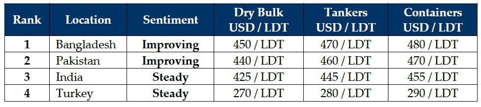

inWeekly Demolition Reports23/03/2026

Eid al-Fitr has arrived to greet the world’s ship recycling markets this week, and as is tradition, it came bearing the giftof silence. From Chattogram to Gadani, Alang to Aliağa, the holy festival has pressed pause on an industry that was already beginning to feel the compounding weight of war, currency volatility, and a stubborn absence of fresh tonnage offerings.
The backdrop to this year’s Eid break is, to put it charitably, anything but restful. The ongoing conflict in the Middle East, which has now stretched into its third week following the U.S.-Israeli military campaign against Iran, continues to send tremors through global energy and freight markets in equal measure. Brent crude briefly pierced USD 119/barrel on Thursday following Iranian retaliatory strikes on Qatar’s Ras Laffan LNG facility, before retreating to settle at USD 108.65/barrel after Netanyahu signalled Israel was helping reopen the Strait of Hormuz. The week’s close above USD 100/barrel for the sixth consecutive session shows just how embedded this new price floor has become.
For ship recyclers, the arithmetic of this war continues to deliver perverse outcomes. Higher oil prices logically translate into higher freight earnings for trading vessels, which in turn means owners are less inclined to sell tonnage for recycling when their ageing units are suddenly pulling respectable income. The Baltic Dry Index closed at 2,057 today, down 7 points on the session but still firm relative to the sub-1,600 lows seen in January, another nail in the coffin for those hoping for a surge of demolition candidates before the monsoon season arrives in June.
The U.S. Dollar continued its reign across all ship recycling destination currencies this week. The Indian Rupee, Pakistani Rupee, Bangladeshi Taka, and Turkish Lira all weakened against the USD, adding inflationary pressure to domestic steel pricing that is already under strain from disrupted supply chains. For recyclers whose revenues are denominated in USD but whose cost bases run in local currency, this would ordinarily be welcome news. Instead, the combination of reduced tonnage supply and unsettled buyer sentiment has meant that the currency advantage has delivered little in the way of increased appetite.
If there is any comfort to be found this week, it is that the Eid holiday provides a natural pause during which yards in both Bangladesh and Pakistan can press forward on their Hong Kong Convention compliance upgrades. With the HKC now in force and inspections increasingly rigorous, any time away from active purchasing is time that can be redirected toward certification.
For Week 12 of 2026, GMS Market Rankings / vessel indications are as below. 
{kind=link}
Source: GMS,Inc.https://www.gmsinc.net/gms_new/index.php/web